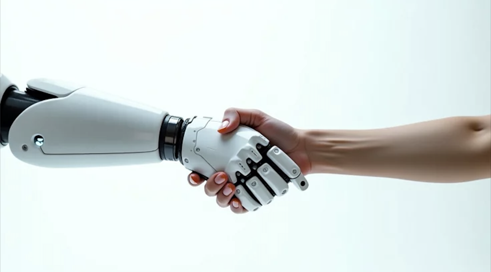

Narrativas
Futuras
tecno-dependencia
Como grupo, creemos que la narrativa que en un futuro será más poderosa, será la narrativa de la tecno-dependencia.
Esto lo creemos debido a que cada vez es más difícil vivir sin las nuevas tecnologías. Principalmente porque el mundo avanza y nosotros debemos avanzar con él.
Un claro ejemplo de esto es cómo los niños en los colegios no pueden hacer sus trabajos, cálculos o redacciones sin el uso de la inteligencia artificial. Se está dejando de utilizar el cerebro y se está derivando todo el trabajo cognitivo a esta nueva herramienta. Según informes, entre los años 2024 y 2026, en distintos continentes como Asia, América, Europa y África, la inteligencia artificial ha sido tema de preocupación en docentes y en alumnos
(Infobae, 2026).
Incluso para algunos docentes, la palabra “dependiente” se queda corta, ya que el problema es mucho más grave que eso.
(Murgo, 2025).
Las nuevas tecnologías están haciendo que nuestras interacciones humanas estén en decadencia y aunque estas traen grandes beneficios, es inevitable rechazar la idea de que estas están haciéndonos cada vez menos personas.
“La capacidad intelectual requiere de lenguaje, comunicación, memoria, capacidad de interacción con los demás, de planificar, y, desgraciadamente, si no sabemos utilizar bien la tecnología, vamos perdiendo eso que nos hace más humanos.”
(Ancajima, 2025)
El tecno-positivismo es la actual narrativa que en cierto modo avala nuestra dependencia a la tecnología, ya que esta narrativa postula que la tecnología es avance y progreso humano, según esta narrativa, las herramientas tecnológicas nos harán la vida más fácil en un lapso de 20 años.
Un ejemplo de esto, fue un estudio que se hizo en el año 2024, donde los resultados son favorables para el uso de la tecnología y creen que esta solucionar distintas problemáticas “Las emociones o sensaciones con las que la asocian son principalmente positivas: entretención (77%), productividad (57%), control (49%), libertad (41%) “
(TrendTIC, 2024).
Estos resultados nos dan cuenta de la percepción de la gente sobre este tema, los cuales son sensaciones de progreso y avance.

Proyección
Una experiencia en comunidad que nos demostró que seremos tecno-dependientes en un futuro cercano, fue el apagón de febrero 2025, donde no solo se fue la luz, sino también el internet, televisión y todas las herramientas a las que estamos acostumbrados. Demostrando que incluso actualmente, una vida sin tecnología no es viable, y en un futuro esta dependencia será mucho peor y más seria.
Cómo grupo creemos que seremos inevitablemente tecno-dependientes en un lapso de 20 años de ahora en adelante, sin embargo no negamos el impacto positivo que la tecnología ha tenido en nuestras vidas. Actualmente es necesaria y todos la ocupamos.